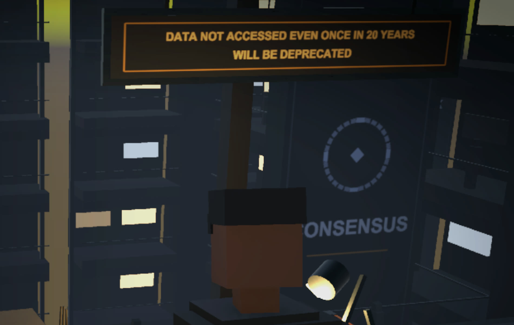
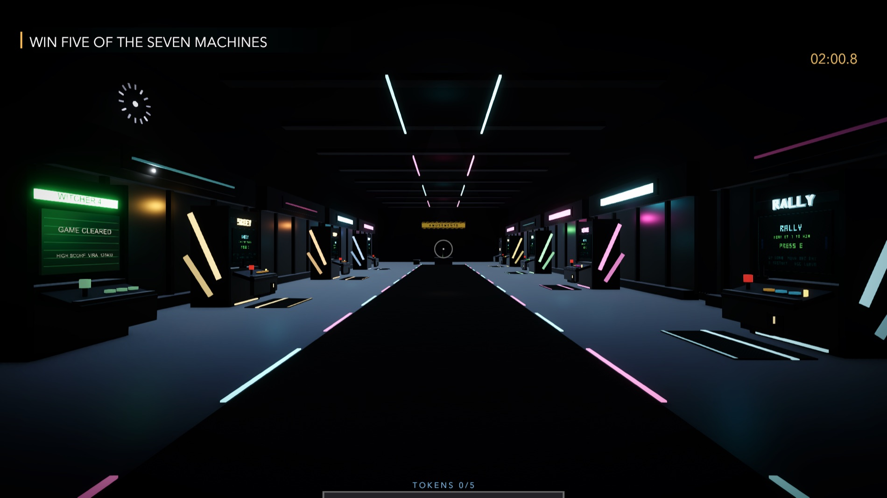
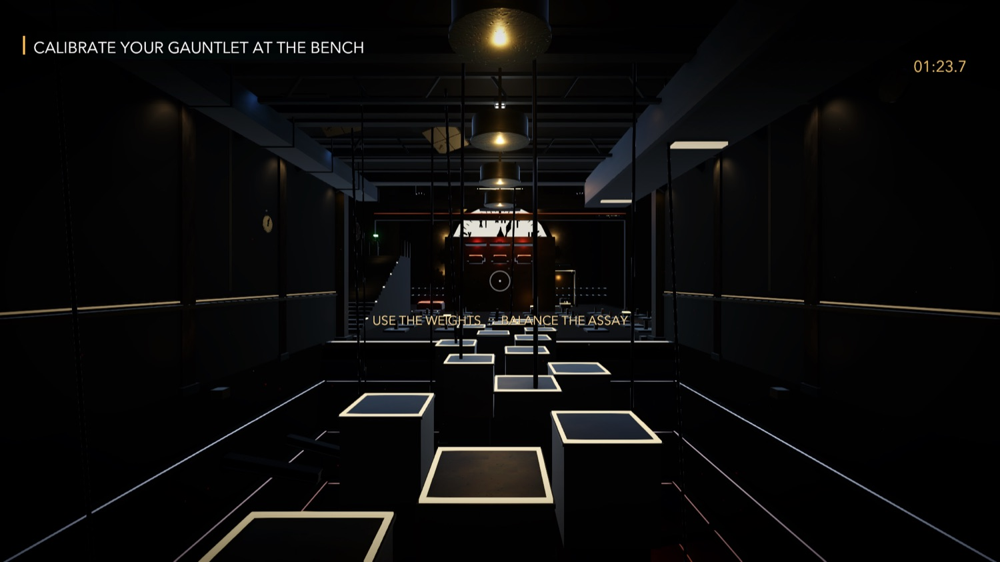
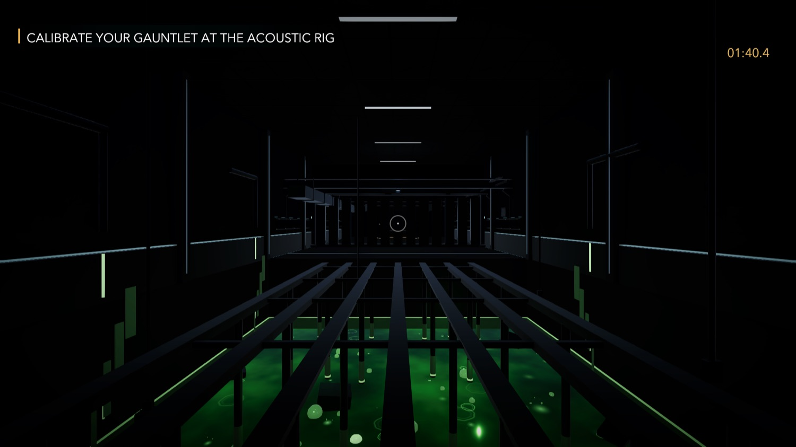
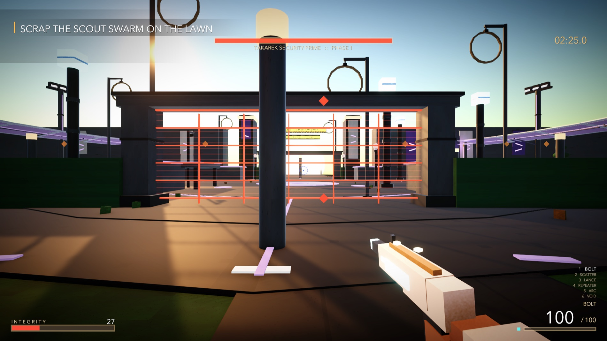

Verb 01
Tether
Pull what is light to your hand, and fling yourself at what is heavy.

Sub-level 11 · 03 January 2077
Anything nobody has opened in twenty years gets deleted, and you are the one who deletes it. A few months in, you are already good at not thinking about it.
The night
By the time you find it, most of it is already gone. What is left is a joke, and the joke means four things at once, which is exactly why the censors let it through.
Getting to it means going up. Walk the wires. Cross between the ticks of a clock the size of a room. Ride a minute hand to the loft, time your jumps across pads that breathe, and find a way over a causeway that is not there any more.
What your hands can do
Verb 01
Pull what is light to your hand, and fling yourself at what is heavy.
Verb 02
Send one object back along its own past, and let go at the right moment.
Verb 03
Sound is force. Shove drums, trolleys, and anything else that will not listen.
Mission 07
When the puzzles run out, the building sends its machines.

Arcade machines pay in tokens. A customer feedback terminal wants an honest answer. A vending machine can be talked into taking a coin that stopped existing forty years ago.
Level 402 · The Incentive Wing
Seven floors, one night
Clock vaults that run on stopped time. An archive where noise is dangerous. A cutting room, a flooded mirror, a waiting room that is not what it seems.



Mission seven
The last of it is a running fight across the grounds, with six weapons and everything the tower taught you on the way down.
If you want to help
RaviWar 1 is the first part of a story that takes eight games to tell. I am one person, with no studio and no funding behind me, and built the traditional way a project that size would outlast me.
If you played it to the end and you are somewhere comfortable financially, you can buy me a coffee. It goes straight into making the next one.
If you are not somewhere comfortable, genuinely don't. Tell one person about the game instead. That is worth more to me than the coffee, and I mean that literally.